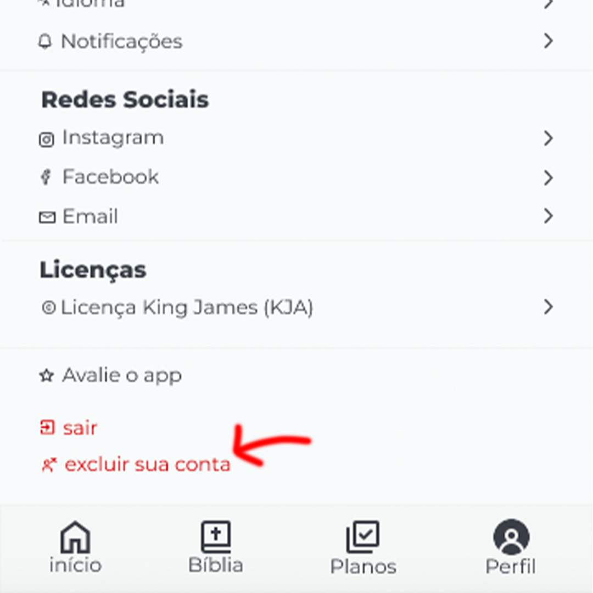
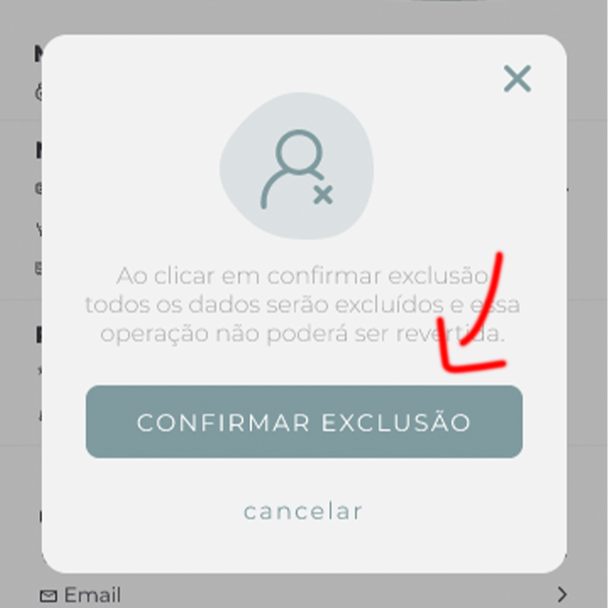

Como Excluir sua conta no app Jesus Today®
Siga os passos abaixo para excluir sua conta com sucesso, os passos são os mesmos para Iphone, Ipad e Android
1° Passo - Entre na aba de perfil
Clique no ícone de perfil localizado no canto inferior direito da tela inicial do app.

2° Passo - Localize a opção "Excluir sua conta"
Role a página até encontrar a opção "Excluir sua conta" e clique nela para iniciar o processo.

3° Passo - Confirme a exclusão
Um diálogo aparecerá solicitando confirmação. Clique em "Confirmar exclusão". Após isso, um carregamento será exibido.

4° Passo - Exclusão concluída ou erro
Se tudo der certo, sua conta será excluída com sucesso e todos os dados serão removidos permanentemente. Caso haja algum problema, uma mensagem será exibida explicando o erro.
Se tiver qualquer dúvida, entre em contato pelo email contato@jesustodayapp.com ou pelo formulário em nosso site.